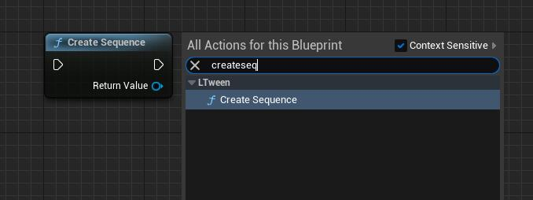
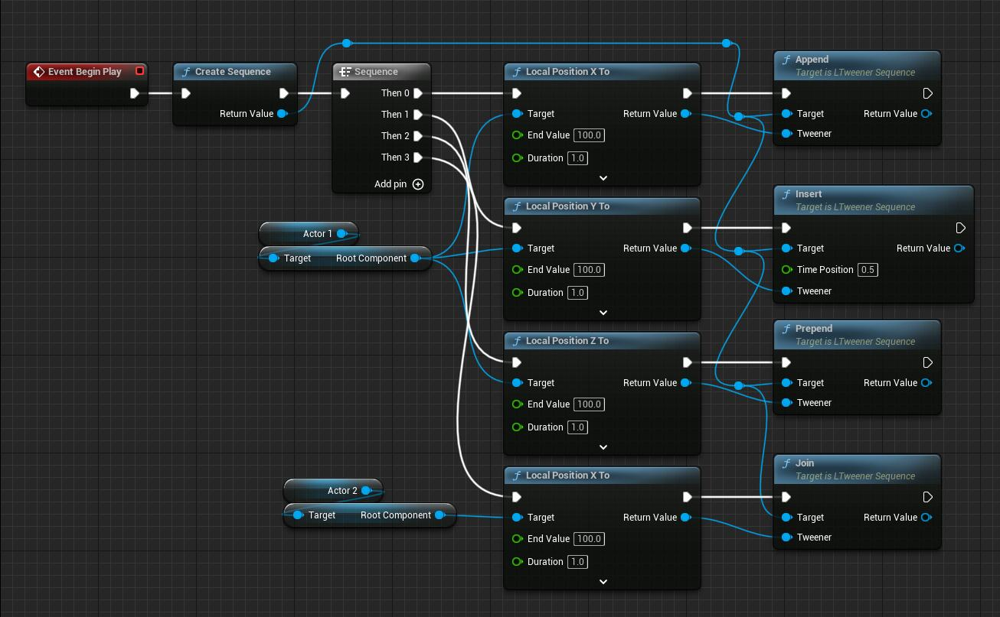
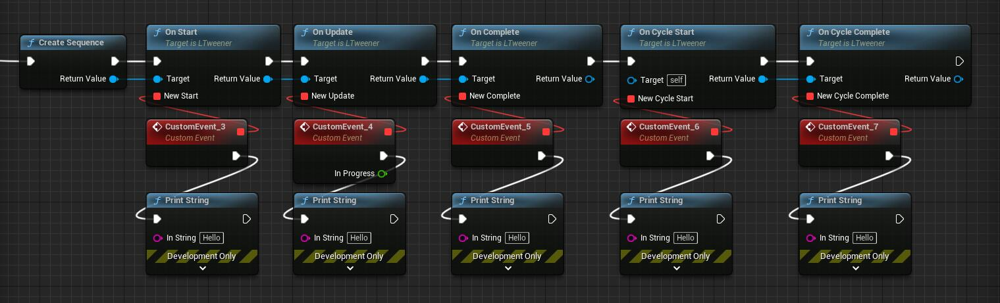

LTweenerSequence
LTweenerSequence is a tween type that controls a group of other tween animations as a single tween.
First of all, it is still a tweener, so it inherits normal tweener's all properties and functions. And it has it's own properties and functions too.
Functions
/**
* Adds the given tween to the end of the Sequence.
* Not support Tweener type: Delay/ DelayFrame/ Virtual.
* Has no effect if the Sequence has already started.
*/
ULTweenerSequence* Append(UObject* WorldContextObject, ULTweener* tweener);
/**
* Adds the given interval to the end of the Sequence.
* Has no effect if the Sequence has already started.
* @param interval The interval duration
*/
ULTweenerSequence* AppendInterval(UObject* WorldContextObject, float interval);
/**
* Inserts the given tween at the given time position in the Sequence, automatically adding an interval if needed.
* Not support Tweener type: Delay/ DelayFrame/ Virtual.
* Has no effect if the Sequence has already started.
* @param timePosition The time position where the tween will be placed
*/
ULTweenerSequence* Insert(UObject* WorldContextObject, float timePosition, ULTweener* tweener);
/**
* Adds the given tween to the beginning of the Sequence, pushing forward the other nested content.
* Not support Tweener type: Delay/ DelayFrame/ Virtual.
* Has no effect if the Sequence has already started.
*/
ULTweenerSequence* Prepend(UObject* WorldContextObject, ULTweener* tweener);
/**
* Adds the given interval to the beginning of the Sequence, pushing forward the other nested content.
* Has no effect if the Sequence has already started.
* @param interval The interval duration
*/
ULTweenerSequence* PrependInterval(UObject* WorldContextObject, float interval);
/**
* Inserts the given tween at the same time position of the last tween added to the Sequence.
* Note that, in case of a Join after an interval, the insertion time will be the time where the interval starts, not where it finishes.
* Not support Tweener type: Delay/ DelayFrame/ Virtual.
* Has no effect if the Sequence has already started.
*/
ULTweenerSequence* Join(UObject* WorldContextObject, ULTweener* tweener);
How to use
1. Create a LTweenerSequence
C++:
auto Sequence = ULTweenBPLibrary::CreateSequence(this);
Blueprint:
Just find Create Sequence node under LTween category

2. Add other tweener
C++:
Sequence->Append(this, ULTweenBPLibrary::LocalPositionXTo(Actor1->GetRootComponent(), 100, 1.0f));
Sequence->Insert(this, 0.5f, ULTweenBPLibrary::LocalPositionYTo(Actor1->GetRootComponent(), 100, 1.0f));
Sequence->Prepend(this, ULTweenBPLibrary::LocalPositionZTo(Actor1->GetRootComponent(), 100, 1.0f));
Sequence->Join(this, ULTweenBPLibrary::LocalPositionXTo(Actor2->GetRootComponent(), 100, 1.0f));
Blueprint: 
3. Properties, Events, Functions
Properties: C++:
Sequence->SetDelay(0.5f);
Sequence->SetEase(LTweenEase::InOutSine);
Sequence->SetLoop(LTweenLoop::Restart, -1);
Sequence->GetLoopCycleCount();
Blueprint:
 Events:
C++:
Events:
C++:
Sequence->OnStart([=]{...});
Sequence->OnUpdate([=](float progress){...});
Sequence->OnComplete([=]{...});
Sequence->OnCycleStart([=]{...});
Sequence->OnCycleComplete([=]{...});
Blueprint:  Functions: C++:
Sequence->Pause();
Sequence->Resume();
Sequence->Restart();
Sequence->Goto(0.5f);
Blueprint: